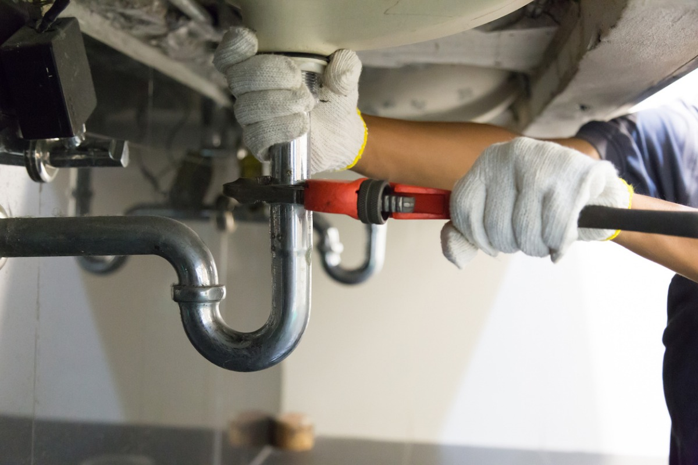

PLUMBING & DRAIN SPECIALIST
Talk to a technician with over 10 years of experience. We can help with all of your plumbing needs, and will get the job done right. Contact us now for fast service anywhere in the Lower Mainland.
(604) 123-456724/7 Emergency Service
